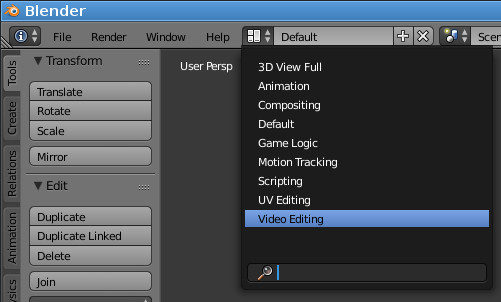
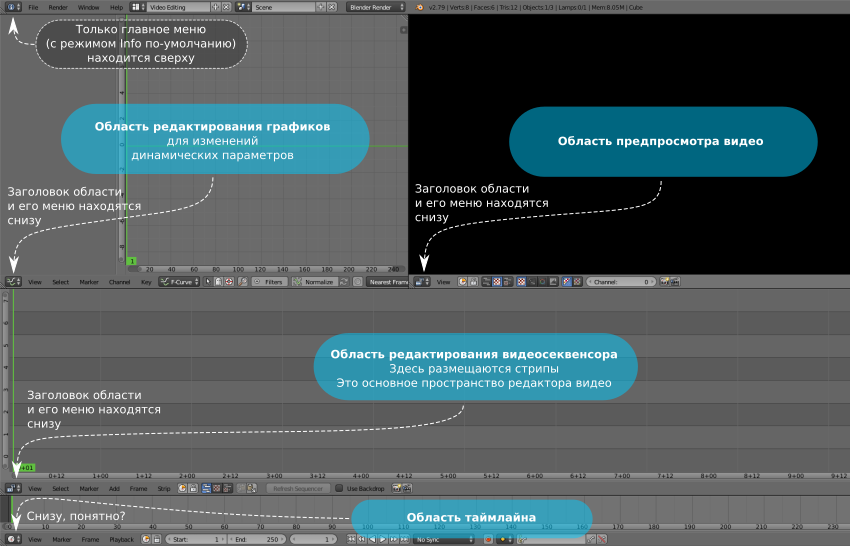
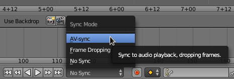
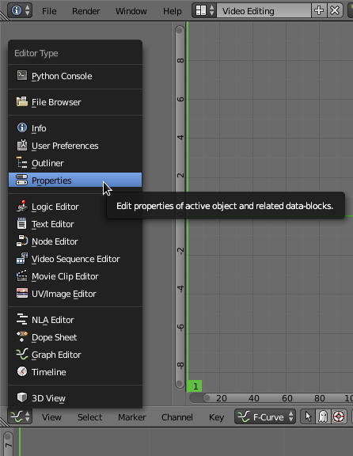
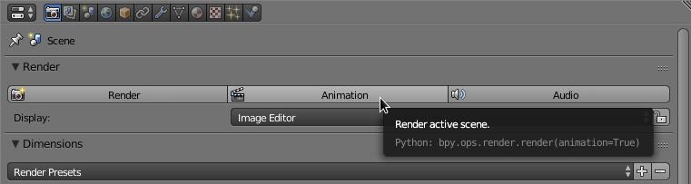
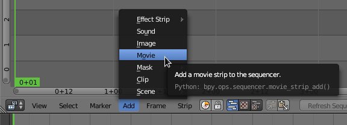
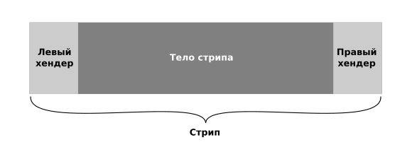
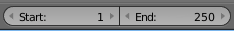
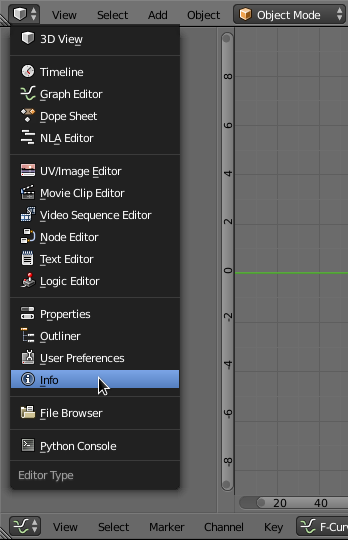
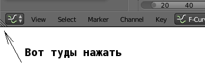

В мире Linux имеется несколько программ для монтажа видео разной степени марсианства и глючности. Поигравшись с ними, можно понять, что для полноценной работы эти инструменты вообще не подходят. Единственный вменяемый и стабильный инструмент - это не очень известный, но очень качественный режим работы Blender - режим редактирования видео. Знающие люди его часто используют для монтажа, зачастую совершенно не зная всю остальную трехмерную часть Blender 3D.
В этой записке скапливаются сведения, которые нужно знать и помнить тем, кто монтирует видео только время от времени, и иногда забывает как выполняется то или иное действие.
Как войти в режим редактирования видео?
В свежеоткрытом Blender следует выбрать набор инструментов Video Editing:

В результате Blender перейдет в режим видеосеквенсора. На экране будут показаны следующие панели:

Как вывести на экран параметры области предпросмотра видео?
Навести курсор на область предпросмотра и нажать кнопку N. Параметры появятся справа от области предпросмотра.
Как вывести на экран параметры области видеосевенсора и стрипов?
Навести курсор на область видеосевенсора (область, где размещаются стрипы - куски видео и аудио, из которых строится видеоролик). Нажать кнопку N. Параметры появятся справа от области видеосеквенсора.
Как сделать синхронизацию аудио и видео при предпросмотре (и рендеринге конечного видео)?
Внизу таймлайна есть выпадающий список режимов синхронизации, который по умолчнию настроен как No Sync. Его надо переключить на AV-Sync.

Как настроить выходной формат видеофайла?
Настройки выходного формата кодирования видеофайла делаются путем вызова области Properties. Эту область проще всего открыть, нажав на кнопку выбора области (меню) в области редактирования графиков. Да, эта кнопка находится снизу области редактирования графиков.

Чтобы вернуться обратно в область редактирования графиков, по той же кнопке следует выбрать Graph Editor.
Как запустить рендеринг (сохранение) видео в файл?
Для запуска рендеринга видео, необходимо перейти в область Properties, установить нужные свойства выходного формата и нажать кнопку Animation:

Как остановить рендеринг видео?
В момент рендеринга, сверху будет надпись Sequence Render. Возле этой надписи будет находиться крестик. Если его нажать, рендеринг фидеофайла остановится.
Как добавить видеофрагмент в область редактирования видеосевенсора?
Добавление видеофрагмента происходит в меню Add видеосевенсора. Мню находится снизу видеосеквенсора, это уже стало понятно.

Когда добавляется видеофрагмент, он представляется в секвенсоре в виде так называемого "стрипа".
Как устроен стрип?
Стрип имеет основное тело, при его перемещении длина стрипа не меняется. У стрипа есть левый и правый хендеры. При их перемещении происходит выбор области начала и конца исходного видео, к которому принадлежит стрип.

Стрипы можно разрезать, и тогда появляется два стрипа, которые будут принадлежать одному и тому же видеофрагменту. Только, обычно, один стрип содержит одну чать видеофрагмента, другой - другую. У одного видеофрагмента может быть бесконечное число стрипов.
Как точно переместить стрип?
Стрипы можно перемещать мышкой, но такое перемещение не всегда точное. Для точного перемещения надо выбрать мышкой тело стрипа, нажать на клавиатуре G (от слова go), затем нажать X или Y. Тогда перемещение выбранного стрипа будет происходить только по одной оси, без смещения по другой.
Как сделать сброс масштабирования в окне секвенсора?
Нажать кнопку Home на клавиатуре.
Как выделить стрипы с помощью выделения в парямоугольной области?
Прямоугольное выделение включается нажатием кнопки B.
Как разместить на экране только область с выбранными стрипами?
Выделить область и отмасштабировать окно секвенсора до этой области можно с помощью сочетания клави Shift+B.
Как сделать точное перемещение стрипа по одному кадру?
Нажать Shift и двигать мышкой. (Или нажимать клавиши стрелок влево/вправо?)
Как переместить несколько хендеров в Blender?
Вначале надо выделить хендеры разных стрипов, удерживая клавишу Shift.
Затем нажать кнопку J (джей).
Перемещать куда нужно.
Как выбрать, какой диапазон кадров попадет в итоговое видео?
Для выбора, какие кадры будут в витогов видео, надо настроить Frame Range. Кадры из этого диапазона попадут в итоговое видео. Настройка Frame Range находится внизу таймлайна:

Если не хочется вводить цифры, можно установить (зеленый) курсор в секвенсоре в нужное место. Внизу таймлайна нажать Frame - Set Start Frame или Set End Frame.
Как перепрыгивать курсором по границам стрипов?
Для быстрого перепрыгивания курсора можно использовать кнопки на клавиатуре PageUp и PageDown.
Как скопировать стрип?
Для копирования стрипа можно выбрать стрип и в меню секвенсора нажать Strip - Duplicate Strip.
Как работать с маркерами?
Маркеры - это ключевые точки в видео, которые монтажник расставляет для удобства навигации. Установка маркера: нажать на клавиатуре M. Изменить имя маркера: нажать на клавиатуре Shift+M.
Что делать, если исчезло меню File?
Поначалу, из-за неопытности, можно случайно закрыть файловое меню (которое обычно находится сверху слева). А закрыв меню File, невозможно даже сохранить проект, чтобы перезапустить Blender. Что делать в такой ситуации? Все просто. Чтобы восстановить меню File, нужно в верхней левой кнопке выбрать пункт Info:

Да, вот так не очень интуитивно, но что есть то есть.
Как скрыть ненужную область?
Надо нажать на уголок из полосочек в левом нижнем углу области. И перетянуть его на другой такой же уголок другой области, как бы уменьшая область, которую необходимо скрыть.

Как быстро скрыть все стрипы эффектов?
Для скрытия стрипов эффектов можно на клавиатуре нажать кнопку H. Показать обратно стрипы эффектов можно сочетанием клавиш: Alt+H.
Как вставить изображение (картинку) с сохранением его пропорций?
Если при вставке изображения оно растянулось на весь экран, надо в свойствах изображения нажать галку Image Offset.
Как сделать отрисовку формы звуковой волны на звуковой дорожке?
Чтобы сделать отображение формы звуковой волны на звуковой дорожке (на звуковом стрипе), надо выбрать стрип и в меню выбрать View - Wave Form Drawing. Бывает, что сразу изображение звуковых колебаний не появляется, для этого должно пройти несколько секунд.
Как запустить воспроизведение с клавиатуры?
Чтобы все время не тыкать мышкой на клавиши Play/Stop, можно для старта и остановки воспроизведения нажимать Alt+A.
Вместо посторного нажатия Alt+A (для остановки воспроизведения), можно нажимать клавишу Esc. Тогда воспроизведение остановится, а курсор перепрыгнет в начальную позицию воспроизведения.
Если, почему-то, воспроизведение запускается с начала видео, а не от курсора, то это значит что курсор стоит за пределами Frame Range (см. выше как выбрать Frame Range).
Как объеденить видео и аудио стрип в один метастрип?
Вначале надо выбрать Video и Audio стрип через клавишу Shift и правую кнопку мышки ПКМ. Затем нажать Ctrl+G. Или в меню выбрать Strip - Make Metastrip.
Этот режим немного глючил, особенно если для аудио-стрипа выбран режим отображени формы волны (Wave Form). Возможно, в более новых версиях Blender эту проблему исправили.
Как войти в содержимое объединенного стрипа?
Чтобы посмотреть что находится внутри метастрипа, можно выбрать этот стрип и нажать кнопку Tab. Чтобы выйти - тоже нажимается кнопка Tab.
Как сделать эффект Fade In для видео (плавное появление изображения из черного фона)?
Для создания эффекта Fade In, надо сделать следующую последовательность действий:
Если растягивать Color-стрип, то эффект FadeIn тоже будет растягиваться.
Внимание! В более новых версиях Blender обещали сделать готовый эффект семейства FadeIn.